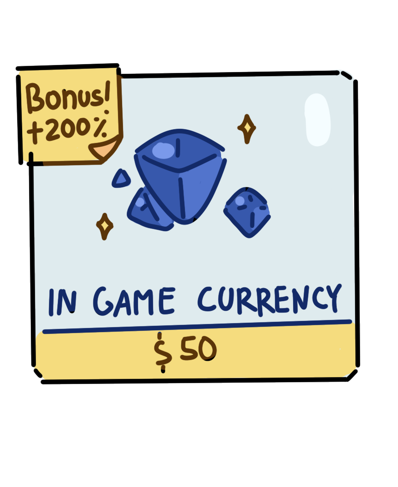
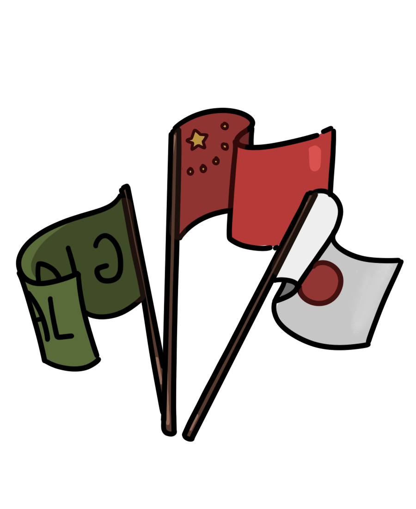
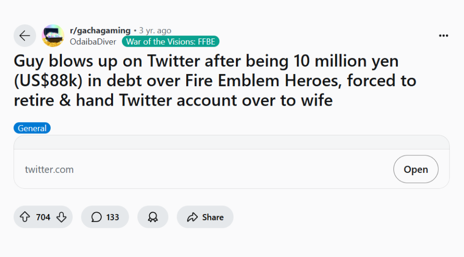
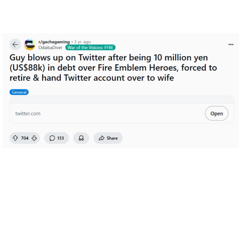
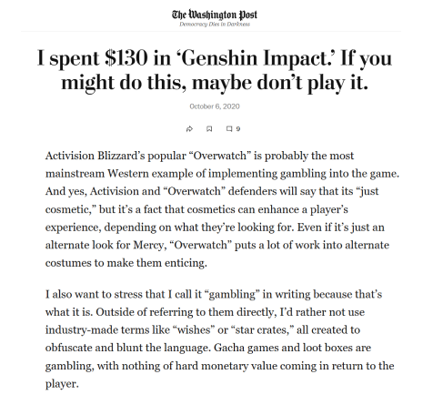
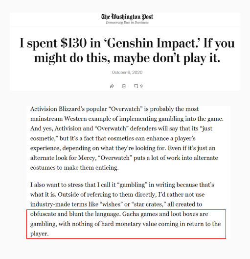

Does Games Purposely Have Shit Bad Drop Rates for Their Gacha Systems to Profit off Their Players?
But, is it really cause of the drop rates?
What is a "Gacha?"
Definition
Noun - /ˈɡɑː.tʃə/
A type of computer game, especially one played on a mobile phone, in which users can pay to get a new
character, ability, object, etc. at random (= by chance, without intentionally choosing which): Games
that rely on randomized in-game transactions
are known as Gacha games.
Gacha mechanics tends to make players spend real-world money on in game currency
There are a lot of gacha games out there!
Some might be very obvious...
Genshin Impact, probably the game people think of when they think Gacha
Honkai Star Rail, made by the same company that made Genshin! They have basically the same
gameplay
and gacha mechanic
Cookie Run, part of a long time franchise! Their first game was released maybe 15 years ago
AFK Arena, you've probably seen an ad of this game on youtube
Pokemon Masters, nintendo will always find a way to make profit
However, any games with Lootboxes or a Card Collecting mechanic also technically
fall under gacha
League of Legends has lootboxes where you can get skins, emotes, and many more!
FIFA makes the players gamble to get the player cards to build stronger teams
Some Roblox developers can include lootboxes in their games that require robux to purchase
COD has a supply box system where players can open them to try and get rare weapons
TCGP somewhat builds on how popular collecting pokemon cards are.
You can purchase packs in game to get rarer cards.
So, whats the issue?
It's frustrating for players to spend a lot of money on an item that isn't guaranteed
Generally, the gacha mechanic is introduced to a free to play game so the developers
could still make a profit out of it. The items that the player receive got be purely cosmetic
(doesn't add anything to the gameplay) or actually gives a boost for the player (more attack, new skills)
Because its not guaranteed, it creates a disparity between players who don't spend money on the game
and players that do. It's also just frustrating for players to see game devs seemingly caring more about
profit than the players
This has always been an issue! It stands true today too
The gacha games market is also expected to have a compound annual growth rate of 8.8%
The market is just going to continue growing exponetially. Since it likely to be around 985.7
million by 2032, its save to say that gacha games will continue getting released
As a player, Its frustrating dealing with gacha mechanis!
While in app purchases are not required, some games use tactics to make them appealing (timers before
the deal runs out, a "sale" on the product). On top of that, its very easy to fall behind in these
games compared to players who are able to spend money on the game to proceed. As such, gacha games
have a reputation of only existing as a quick cash grab.
By making it so theres only a small chance for players to get the rare items. these companies
encourage players to spend money in hopes of increasing those chances. However, there's no clear
proof of this. The question arises on whether the drop rates offered by these games actually affects
how players spend on the game or if it is other factors that players may have not considered.

So, is profit the reason why so many games nowadays include a gacha system?
Let's look at the performance of the 50 most profitable mobile games that contains a gacha system in
2024.
Looking at the Data
What are the 50 most profitale mobile games in 2024? (up until October)
The following is a breakdown of these games alongside a breakdown of their genre's and what year the game was
released in.
Filter the data by clicking on the genre list or the years!
So in 2024, 14 out of the 50 most games fall under the role-playing genre, indicating that a lot of spenders
tend to prefer games in that genre.
On top of that, at least 10 games were released in 2024. This could mean that some players are simply
spending to consume all the possible contents in that game as quickly as possible. It may also be
recency bias where players feel more inclined to spend their money to games they just begun.
It seems to be a linear scale in regards to when each game were released.
The newer the game, the more likely it is to remain on the most profitable chart. Which, again, is ikely
because the older the game, the more bored a player might be when playing it because they may think that
they've experienced everything the game has to offer.
Let's look at the best performing game in 2024
While there is no specific trend, it's clear that the revenue gacha games generate
tend to fluctuate a lot. Some months could be way more profitable than others and the rates
offered by the games would not have changed. It would be the content that change. Which indicates
that it isn't the rates thats affected how players spend, its the content they produce.
So, lets look at Honkai Star Rail
Part 1 - What is Honkai Star Rail?
Its a free-to-play role-playing gacha video game developed and
published by HoYoverse. It is a turn-based game, featuring the main character, the Trailblazer,
travelling across planets through the Astral Express to help and connect the worlds while resolving
disasters caused by "Stellarons" and other third-parties. The game was publicly released internationally on
April 26, 2023,
This game is technically part of HoYoverse's previous series, Honkai. Its the fourth installment
in the Honkai series so it utilizing some characters from Honkai Impact 3rd and some gameplay
elements from their other very popular game, Genshin Impact.
Part 2 - What happened in March 2024?
Two characters were released this month. Jing Yuan and Sparkle.
Sparkle made her debut in this update
With this being the first time Sparkle is released, players are more willing to spend money
to get her in hopes of her being the most effective characters in the update.
So, who is Jingyuan?
Jingyuan is currently the most popular Honkai Star Rail character
based on popularity polls held by Hoyoverse, the publisher.
Theres a lot of reasons why players love him.
He appears a lot in stories and he's a useful character to have gameplay wise
A lot of players just find him attractive and want him in their team
He's always been a popular character too
The publisher also announced 3 new characters to be released soon
With Sparkle and Jingyuan's release making the 2.0 update, there are several more characters
introduced by the publishers to keep the game exciting and entice players into spending money to get these
new characters. This could be due to players enjoying their aesthetic, or hoping they'll be a good character
for
gameplay. The release announcement likely caused some players to immediately spend money to start
"saving" for these characters in advance.
The 3 character release announcements on March 16th, 2024
So, how does other games compare to Honkai? (or with each other)
Select 2 games you want to compare with each other here
Is there a correlation between drop rates and revenue?
Based on Honkai: Star Rail's performance, it seems that revenue is affected by the characters popularity more
than anything. However, does drop rates still play a part in this?
The following chart looks at the correlation between a game's drop rate with a games revenue. It also looks at
whether the amount of new players joining the game affects the amount of profit a game gets. An argument could
be made that new players might be more
likely to spend money on these games to catch up with more veteran players
Based on this chart, it does look like the revenue isn't affected by the drop rates offered by each game as
there is a variety of them all throughout. While it seemed like games with lower drop rates tend to have more
profits,there are still a lot of instances of other games with the same drop rate that doesn't produce even 1/10 of
another games profit.
Finally, is there region that tends to generate the most revenue?
While not always the case, mobile games tends to have 3 different servers for the players; Global, Japanese,
and Chinese servers.
Depending on where the video game publisher is from, mobile games tend to release in first locally in China or
Japan. As these games grow in popularity, they
would create a global server for the rest of the world to be able to properly understand the story of the game.
This isn't always the case of course
and some games, like Genshin Impact, released their Chinese and Global servers together.
There is a believe that the reason some games make a lot of money is their Asian players,
specifically Japanese and Chinese player. As such, games tend to market themselves
to that market in hopes of getting them to spend money.

The region with the highest revenue overall will be colored in.
Mobile gacha games tend to be the most profitable in Japan
Considering "gacha" comes from the Japanese word "Gachapon" and generally, a lot of gacha games comes from
Japan, this makes a lot of sense!
With gacha games being a common occurance there, Japanese players are likely more willing to spend on these
games as its a bit more normalized.
It is important to note that when China generates revenue, it generates a LOT compared to other regions. If
you were to look at Love and Deepsace, revenue
generated by the Chinese servers tends to be at least 5 times what Global and Japan servers combined generate in
a month. While this is the most drastic difference,
this can also be seen with titmes such as Genshin Impact, Honkai Star: Rail, and Arknights.
With this in mind, it makes sense why some video games tend to market itself to a Japanese or Chinese audience
first, they really are the big
moneymakers when it comes to it.
What did we learn?
Profit for these games come from the characters, or the gameplay
With gacha games either constantly releasing new characters, re-releasing popular characters,
or just making new items that is useful for well liked characters, there will be players
that are so attached to them that they'd be willing to spend money to get those items.
Drop rates do play a part in terms of longevity. Games released between 2012 to 2017
had an overall higher drop rate compared to games released in 2018 onwards.
Video games always want to makes their veteran players happy while ensuring they make it
fun and accessible for new players to maintain their game's longevity by replenishing
the player base, preventing decline as older players may stop playing and generating
potential revenue streams from new users.
So if the rates are bad, no one wants to play the game!
Its very important for there to be good balance on the drop rates a game offers alongside the the gameplay
and storyline to ensure the game can succeed!
The Dangers of Gacha
It is important to keep in mind that Gacha can be a dangerous mechanic.
Gacha as a mechanic is similar to gambling. It doesn't help that when gamers love get attached
to a character, a lot of them would do ANYTHING to get them. As a video game developer, it is important to
be aware
of these risks and still keep a players wellbeing in mind when using the gacha mechanic.
There are people that's gone broke from gacha games

It's also wrapped our perception of what is "okay" to charge for in games

Some people even prioritized gacha over necessities

There are even articles calling out this issue
An article by the Washington posts calls gacha mechanic for what it is, gambling

Its important for players to be aware of this fact, and for developers to (in good fate) not abuse their
player base for money to get characters they like.
So, if you ever want to release a game and make profit (ethically), make the characters
hot, but doable to get!
Ps. DON'T MAKE COSMETICS THAT COST MORE THAN 30 CAD THAT DOES NOTHING thats just a scam and it won't make any of
your players happy >:(